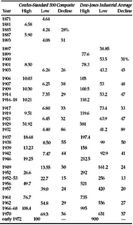
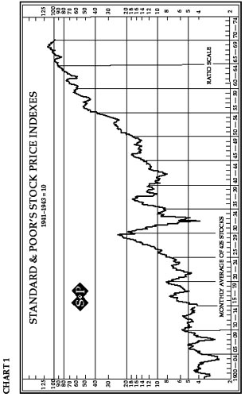
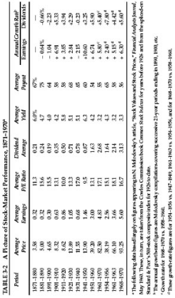
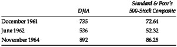
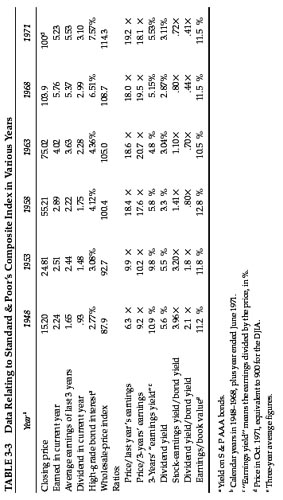

T he investor’s portfolio of common stocks will represent a small cross-section of that immense and formidable institution known as the stock market. Prudence suggests that he have an adequate idea of stock-market history, in terms particularly of the major fluctuations in its price level and of the varying relationships between stock prices as a whole and their earnings and dividends. With this background he may be in a position to form some worthwhile judgment of the attractiveness or dangers of the level of the market as it presents itself at different times. By a coincidence, useful statistical data on prices, earnings, and dividends go back just 100 years, to 1871. (The material is not nearly as full or dependable in the first half-period as in the second, but it will serve.) In this chapter we shall present the figures, in highly condensed form, with two objects in view. The first is to show the general manner in which stocks have made their underlying advance through the many cycles of the past century. The second is to view the picture in terms of successive ten-year averages, not only of stock prices but of earnings and dividends as well, to bring out the varying relationship between the three important factors. With this wealth of material as a background we shall pass to a consideration of the level of stock prices at the beginning of 1972.
The long-term history of the stock market is summarized in two tables and a chart. Table 3-1 sets forth the low and high points of nineteen bear- and bull-market cycles in the past 100 years. We have used two indexes here. The first represents a combination of an early study by the Cowles Commission going back to 1870, which has been spliced on to and continued to date in the well-known Standard & Poor’s composite index of 500 stocks. The second is the even more celebrated Dow Jones Industrial Average (the DJIA, or “the Dow”), which dates back to 1897; it contains 30 companies, of which one is American Telephone & Telegraph and the other 29 are large industrial enterprises. 1
TABLE 3-1 Major Stock-Market Swings Between 1871 and 1971

Chart I, presented by courtesy of Standard & Poor’s, depicts the market fluctuations of its 425-industrial-stock index from 1900 through 1970. (A corresponding chart available for the DJIA will look very much the same.) The reader will note three quite distinct patterns, each covering about a third of the 70 years. The first runs from 1900 to 1924, and shows for the most part a series of rather similar market cycles lasting from three to five years. The annual advance in this period averaged just about 3%. We move on to the “New Era” bull market, culminating in 1929, with its terrible aftermath of collapse, followed by quite irregular fluctuations until 1949. Comparing the average level of 1949 with that of 1924, we find the annual rate of advance to be a mere 1½%; hence the close of our second period found the public with no enthusiasm at all for common stocks. By the rule of opposites the time was ripe for the beginning of the greatest bull market in our history, presented in the last third of our chart. This phenomenon may have reached its culmination in December 1968 at 118 for Standard & Poor’s 425 industrials (and 108 for its 500-stock composite). As Table 3-1 shows, there were fairly important setbacks between 1949 and 1968 (especially in 1956–57 and 1961–62), but the recoveries therefrom were so rapid that they had to be denominated (in the long- accepted semantics) as recessions in a single bull market, rather than as separate market cycles. Between the low level of 162 for “the Dow” in mid-1949 and the high of 995 in early 1966, the advance had been more than sixfold in 17 years—which is at the average compounded rate of 11% per year, not counting dividends of, say, 3½% per annum. (The advance for the Standard & Poor’s composite index was somewhat greater than that of the DJIA—actually from 14 to 96.)
These 14% and better returns were documented in 1963, and later, in a much publicized study. * 2 It created a natural satisfaction on Wall Street with such fine achievements, and a quite illogical and dangerous conviction that equally marvelous results could be expected for common stocks in the future. Few people seem to have been bothered by the thought that the very extent of the rise might indicate that it had been overdone. The subsequent decline from the 1968 high to the 1970 low was 36% for the Standard & Poor’s composite (and 37% for the DJIA), the largest since the 44% suffered in 1939–1942, which had reflected the perils and uncertainties after Pearl Harbor. In the dramatic manner so characteristic of Wall Street, the low level of May 1970 was followed by a massive and speedy recovery of both averages, and the establishment of a new all-time high for the Standard & Poor’s industrials in early 1972. The annual rate of price advance between 1949 and 1970 works out at about 9% for the S & P composite (or the industrial index), using the average figures for both years. That rate of climb was, of course, much greater than for any similar period before 1950. (But in the last decade the rate of advance was much lower—5¼% for the S & P composite index and only the once familiar 3% for the DJIA.)

The record of price movements should be supplemented by corresponding figures for earnings and dividends, in order to provide an overall view of what has happened to our share economy over the ten decades. We present a conspectus of this kind in our Table 3-2 (p. 71). It is a good deal to expect from the reader that he study all these figures with care, but for some we hope they will be interesting and instructive.
Let us comment on them as follows: The full decade figures smooth out the year-to-year fluctuations and leave a general picture of persistent growth. Only two of the nine decades after the first show a decrease in earnings and average prices (in 1891–1900 and 1931–1940), and no decade after 1900 shows a decrease in average dividends. But the rates of growth in all three categories are quite variable. In general the performance since World War II has been superior to that of earlier decades, but the advance in the 1960s was less pronounced than that of the 1950s. Today’s investor cannot tell from this record what percentage gain in earnings dividends and prices he may expect in the next ten years, but it does supply all the encouragement he needs for a consistent policy of common-stock investment.
However, a point should be made here that is not disclosed in our table. The year 1970 was marked by a definite deterioration in the overall earnings posture of our corporations. The rate of profit on invested capital fell to the lowest percentage since the World War years. Equally striking is the fact that a considerable number of companies reported net losses for the year; many became “financially troubled,” and for the first time in three decades there were quite a few important bankruptcy proceedings. These facts as much as any others have prompted the statement made above * that the great boom era may have come to an end in 1969–1970.
A striking feature of Table 3-2 is the change in the price/earnings ratios since World War II. † In June 1949 the S & P composite index sold at only 6.3 times the applicable earnings of the past 12 months; in March 1961 the ratio was 22.9 times. Similarly, the dividend yield on the S & P index had fallen from over 7% in 1949 to only 3.0% in 1961, a contrast heightened by the fact that interest rates on high-grade bonds had meanwhile risen from 2.60% to 4.50%. This is certainly the most remarkable turnabout in the public’s attitude in all stock-market history.
To people of long experience and innate caution the passage from one extreme to another carried a strong warning of trouble ahead. They could not help thinking apprehensively of the 1926–1929 bull market and its tragic aftermath. But these fears have not been confirmed by the event. True, the closing price of the DJIA in 1970 was the same as it was 6½ years earlier, and the much heralded “Soaring Sixties” proved to be mainly a march up a series of high hills and then down again. But nothing has happened either to business or to stock prices that can compare with the bear market and depression of 1929–1932.

The Stock-Market Level in Early 1972
With a century-long conspectus of stock, prices, earnings, and dividends before our eyes, let us try to draw some conclusions about the level of 900 for the DJIA and 100 for the S & P composite index in January 1972.
In each of our former editions we have discussed the level of the stock market at the time of writing, and endeavored to answer the question whether it was too high for conservative purchase. The reader may find it informing to review the conclusions we reached on these earlier occasions. This is not entirely an exercise in self-punishment. It will supply a sort of connecting tissue that links the various stages of the stock market in the past twenty years and also a taken-from-life picture of the difficulties facing anyone who tries to reach an informed and critical judgment of current market levels. Let us, first, reproduce the summary of the 1948, 1953, and 1959 analyses that we gave in the 1965 edition:
In 1948 we applied conservative standards to the Dow Jones level of 180, and found no difficulty in reaching the conclusion that “it was not too high in relation to underlying values.” When we approached this problem in 1953 the average market level for that year had reached 275, a gain of over 50% in five years. We asked ourselves the same question—namely, “whether in our opinion the level of 275 for the Dow Jones Industrials was or was not too high for sound investment.” In the light of the subsequent spectacular advance, it may seem strange to have to report that it was by no means easy for us to reach a definitive conclusion as to the attractiveness of the 1953 level. We did say, positively enough, that “from the standpoint of value indications—our chief investment guide—the conclusion about 1953 stock prices must be favorable.” But we were concerned about the fact that in 1953, the averages had advanced for a longer period than in most bull markets of the past, and that its absolute level was historically high. Setting these factors against our favorable value judgment, we advised a cautious or compromise policy. As it turned out, this was not a particularly brilliant counsel. A good prophet would have foreseen that the market level was due to advance an additional 100% in the next five years. Perhaps we should add in self-defense that few if any of those whose business was stock-market forecasting—as ours was not—had any better inkling than we did of what lay ahead.
At the beginning of 1959 we found the DJIA at an all-time high of 584. Our lengthy analysis made from all points of view may be summarized in the following (from page 59 of the 1959 edition): “In sum, we feel compelled to express the conclusion that the present level of stock prices is a dangerous one. It may well be perilous because prices are already far too high. But even if this is not the case the market’s momentum is such as inevitably to carry it to unjustifiable heights. Frankly, we cannot imagine a market of the future in which there will never be any serious losses, and in which, every tyro will be guaranteed a large profit on his stock purchases.”
The caution we expressed in 1959 was somewhat better justified by the sequel than was our corresponding attitude in 1954. Yet it was far from fully vindicated. The DJIA advanced to 685 in 1961; then fell a little below our 584 level (to 566) later in the year; advanced again to 735 in late 1961; and then declined in near panic to 536 in May 1962, showing a loss of 27% within the brief period of six months. At the same time there was a far more serious shrinkage in the most popular “growth stocks”—as evidenced by the striking fall of the indisputable leader, International Business Machines, from a high of 607 in December 1961 to a low of 300 in June 1962.
This period saw a complete debacle in a host of newly launched common stocks of small enterprises—the so-called hot issues—which had been offered to the public at ridiculously high prices and then had been further pushed up by needless speculation to levels little short of insane. Many of these lost 90% and more of the quotations in just a few months.
The collapse in the first half of 1962 was disconcerting, if not disastrous, to many self-acknowledged speculators and perhaps to many more imprudent people who called themselves “investors.” But the turnabout that came later that year was equally unsuspected by the financial community. The stock-market averages resumed their upward course, producing the following sequence:
The recovery and new ascent of common-stock prices was indeed remarkable and created a corresponding revision of Wall Street sentiment. At the low level of June 1962 predictions had appeared predominantly bearish, and after the partial recovery to the end of that year they were mixed, leaning to the skeptical side. But at the outset of 1964 the natural optimism of brokerage firms was again manifest; nearly all the forecasts were on the bullish side, and they so continued through the 1964 advance.

We then approached the task of appraising the November 1964 levels of the stock market (892 for the DJIA). After discussing it learnedly from numerous angles we reached three main conclusions. The first was that “old standards (of valuation) appear inapplicable; new standards have not yet been tested by time.” The second was that the investor “must base his policy on the existence of major uncertainties. The possibilities compass the extremes, on the one hand, of a protracted and further advance in the market’s level—say by 50%, or to 1350 for the DJIA; or, on the other hand, of a largely unheralded collapse of the same magnitude, bringing the average in the neighborhood of, say, 450" (p. 63). The third was expressed in much more definite terms. We said: “Speaking bluntly, if the 1964 price level is not too high how could we say that any price level is too high?” And the chapter closed as follows:
WHAT COURSE TO FOLLOW
Investors should not conclude that the 1964 market level is dangerous merely because they read it in this book. They must weigh our reasoning against the contrary reasoning they will hear from most competent and experienced people on Wall Street. In the end each one must make his own decision and accept responsibility therefor. We suggest, however, that if the investor is in doubt as to which course to pursue he should choose the path of caution. The principles of investment, as set forth herein, would call for the following policy under 1964 conditions, in order of urgency:
Investors who for some time have been following a bona fide dollar-cost averaging plan can in logic elect either to continue their periodic purchases unchanged or to suspend them until they feel the market level is no longer dangerous. We should advise rather strongly against the initiation of a new dollar-averaging plan at the late 1964 levels, since many investors would not have the stamina to pursue such a scheme if the results soon after initiation should appear highly unfavorable.
This time we can say that our caution was vindicated. The DJIA advanced about 11% further, to 995, but then fell irregularly to a low of 632 in 1970, and finished that year at 839. The same kind of debacle took place in the price of “hot issues”—i.e., with declines running as much as 90%—as had happened in the 1961–62 setback. And, as pointed out in the Introduction, the whole financial picture appeared to have changed in the direction of less enthusiasm and greater doubts. A single fact may summarize the story: The DJIA closed 1970 at a level lower than six years before—the first time such a thing had happened since 1944.
Such were our efforts to evaluate former stock-market levels. Is there anything we and our readers can learn from them? We considered the market level favorable for investment in 1948 and 1953 (but too cautiously in the latter year), “dangerous” in 1959 (at 584 for DJIA), and “too high” (at 892) in 1964. All of these judgments could be defended even today by adroit arguments. But it is doubtful if they have been as useful as our more pedestrian counsels—in favor of a consistent and controlled common-stock policy on the one hand, and discouraging endeavors to “beat the market” or to “pick the winners” on the other.
Nonetheless we think our readers may derive some benefit from a renewed consideration of the level of the stock market—this time as of late 1971—even if what we have to say will prove more interesting than practically useful, or more indicative than conclusive. There is a fine passage near the beginning of Aristotle’s Ethics that goes: “It is the mark of an educated mind to expect that amount of exactness which the nature of the particular subject admits. It is equally unreasonable to accept merely probable conclusions from a mathematician and to demand strict demonstration from an orator.” The work of a financial analyst falls somewhere in the middle between that of a mathematician and of an orator.
At various times in 1971 the Dow Jones Industrial Average stood at the 892 level of November 1964 that we considered in our previous edition. But in the present statistical study we have decided to use the price level and the related data for the Standard & Poor’s composite index (or S & P 500), because it is more comprehensive and representative of the general market than the 30-stock DJIA. We shall concentrate on a comparison of this material near the four dates of our former editions—namely the year-ends of 1948, 1953, 1958 and 1963—plus 1968; for the current price level we shall take the convenient figure of 100, which was registered at various times in 1971 and in early 1972. The salient data are set forth in Table 3-3. For our earnings figures we present both the last year’s showing and the average of three calendar years; for 1971 dividends we use the last twelve months’ figures; and for 1971 bond interest and wholesale prices those of August 1971.
The 3-year price/earnings ratio for the market was lower in October 1971 than at year-end 1963 and 1968. It was about the same as in 1958, but much higher than in the early years of the long bull market. This important indicator, taken by itself, could not be construed to indicate that the market was especially high in January 1972. But when the interest yield on high-grade bonds is brought into the picture, the implications become much less favorable. The reader will note from our table that the ratio of stock returns (earnings/price) to bond returns has grown worse during the entire period, so that the January 1972 figure was less favorable to stocks, by this criterion, than in any of the previous years examined. When dividend yields are compared with bond yields we find that the relationship was completely reversed between 1948 and 1972. In the early year stocks yielded twice as much as bonds; now bonds yield twice as much, and more, than stocks.

Our final judgment is that the adverse change in the bond-yield/stock-yield ratio fully offsets the better price/earnings ratio for late 1971, based on the 3-year earnings figures. Hence our view of the early 1972 market level would tend to be the same as it was some 7 years ago—i.e., that it is an unattractive one from the standpoint of conservative investment. (This would apply to most of the 1971 price range of the DJIA: between, say, 800 and 950.)
In terms of historical market swings the 1971 picture would still appear to be one of irregular recovery from the bad setback suffered in 1969–1970. In the past such recoveries have ushered in a new stage of the recurrent and persistent bull market that began in 1949. (This was the expectation of Wall Street generally during 1971.) After the terrible experience suffered by the public buyers of low-grade common-stock offerings in the 1968–1970 cycle, it is too early (in 1971) for another twirl of the new-issue merry-go-round. Hence that dependable sign of imminent danger in the market is lacking now, as it was at the 892 level of the DJIA in November 1964, considered in our previous edition. Technically, then, the outlook would appear to favor another substantial rise far beyond the 900 DJIA level before the next serious setback or collapse. But we cannot quite leave the matter there, as perhaps we should. To us, the early-1971-market’s disregard of the harrowing experiences of less than a year before is a disquieting sign. Can such heedlessness go unpunished? We think the investor must be prepared for difficult times ahead—perhaps in the form of a fairly quick replay of the the 1969–1970 decline, or perhaps in the form of another bull-market fling, to be followed by a more catastrophic collapse. 3
What Course to Follow
Turn back to what we said in the last edition, reproduced on p. 75. This is our view at the same price level—say 900—for the DJIA in early 1972 as it was in late 1964.